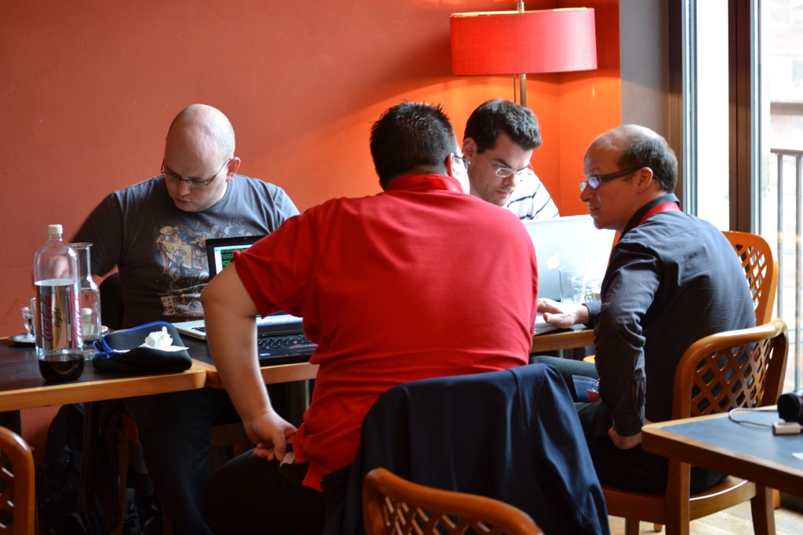
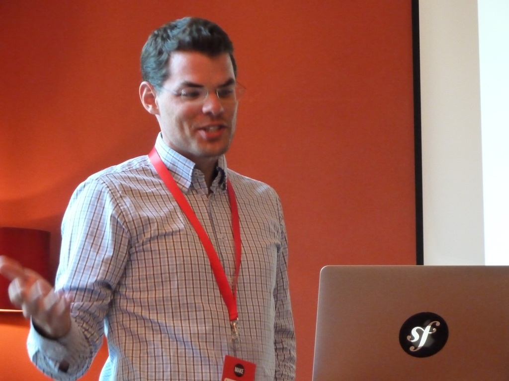

Blog
WebCronMon - Web Monitor
At seantis we use Webcron.org to monitor our sites. For our customers, as well as for our office monitor screen, we wanted a simple auto-refreshing page that shows the status of our sites at a glance. We therefore wrote this small Flask application looking like this:

The monitor only shows the bare minimum of information to keep things simple:
- list monitors by group
- link the monitors to the actual website
- show the current state (online / offline since)
- show the uptime of the last 30 days
The site will update the list every 60 seconds by default, unless configured otherwise or unless the timer on the upper right is toggled with a mouse- click.
GitHub project: https://github.com/seantis/webcronmon
Über das Problem sprechen statt über die Lösung!
Die perzipierte Lösung ohne ausführlichere Beschreibung des zugrunde liegenden Problems (im Sinne von zu lösender Aufgabe) kann für das Projekt zum Risiko werden. Das Denken in vorgespurten Lösungskategorien verengt vorzeitig den Möglichkeitsraum für die zu entwickelnde Lösung. Gut möglich, dass es passendere und bessere Lösungen gibt.
Das Nachdenken über das Problem an sich darf nicht übersprungen werden.
1) Beschreibung des Problems
Ein paar wenige Sätze zur Beschreibung des Problems. Sätze und nicht Bullet Points! Also auch kein Power Point bitte.
2) Ursachen des Problems
Verschiedene Erklärungsversuche (Arbeitshypothesen) sollen aufgestellt werden.
3) Quantifizierung des Problems
Wie gross ist das Problem relativ gesehen: haben 5 von 1'000 Benutzern ein Problem oder sind es 500 von 1'000? Die Relationen abschätzen zu können hilft.
4) Abgrenzungen (Scope)
Es soll beschrieben werden, was nicht Teil des Problems ist. Es mag paradox erscheinen, aber das explizite Benennen von Elementen, die nicht Teil des Problems sind, macht durchaus Sinn.
5) Begrifflichkeiten klären
Für Personen mit unterschiedlichem Hintergrund darf nicht davon ausgegangen werden, dass sie unter einem verwendeten Begriff das Gleiche verstehen.
6) Quick Fix
Gibt es eine einfache Möglichkeit, das Problem rasch aus der Welt zu schaffen? Können bestehende Prozesse so angepasst werden, dass sich das Problem mit kleinem Aufwand - so genannt "administrativ" - bewältigen lässt.
Die Schritte 2)-6) kann man sich auch sparen. Sie sollen lediglich illustrieren, dass die gründliche Analyse eines Problems mehr bringt, als die voreilige Zuflucht zu eine bekannte Lösung.
Probleme zu finden ist schwierig genug
Warum haben viele Leute die Tendenz voreilig über die Lösung sprechen zu wollen, statt zuerst gründlich über das zugrundeliegende Problem nachzudenken?
Es wird zu wenig anerkannt, dass allein schon das Finden und Beschreiben von Problemen wertvoll und keinesfalls trivial ist!
[..] I’ve learned one of the biggest mistakes “nontechnical” people make when communicating to great hackers about product is that we try and tell them the solutions before we ever tell them the problem. It’s like we don’t trust them to be able to think through and reach their own solution. When in reality their solution is usually 10-100x better than ours because they are the ones building it!!
I started thinking about this and realized maybe its because nontechnical people don’t realize the value they’ve created just by finding the problem. Truly, just being able to find and articulate the problem is really valuable when building a product.
http://katgleason.tumblr.com/post/47257463324/talk-about-the-problem-not-the- solution
SCQM-Datenbank am Bechterew-Symposium
PD Dr. med. Adrian Ciurea präsentiert am Bechterew-Symposium vor Betroffenen Forschungsergebnisse der Langzeitstudie Morbus Bechterew («Spondylitis ankylosans»).
Es motiviert uns sehr zu sehen, wie wir mit der Entwicklung und dem Betrieb der Nationalen Online-Datenbank für entzündlich rheumatische Erkrankungen unseren Beitrag für diese Forschung leisten dürfen.
Swiss Clinical Quality Management in Rheumatic Diseases: www.scqm.ch
Schweizerischen Vereinigung Morbus Bechterew: www.bechterew.ch
Sicheres Login mit YubiKey
Was ist ein YubiKey?
Ein YubiKey funktioniert wie eine externe Tastatur und kann einfach per USB an Ihr PC/Mac angeschlossen werden. Der YubiKey funktioniert auf allen Betriebsystemen ohne zusätzliche Software/Treiber-Installation.
Wie funktioniert der YubiKey?
Der YubiKey ist nichts anderes als eine USB-Tastatur. Der Clou: er hat nur einen (goldenen) Kopf und eine Funktionalität. Der YubiKey erzeugt ein OneTime-Token. Das erzeugte Einmalpasswort wird serverseitig validiert und authentifiziert den Benutzer.
Der Login-Prozess
Jedes Mal, wenn der Benutzer den Knopf drückt, wird ein neues OneTime Token erzeugt. Auf dem Login-Formular müssen daher ein persönliches Passwort und das YubiKey Token eingegeben werden. Auf das Eintippen des Benutzernames (eMail- Adresse) kann verzichtet werden, da der YubiKey automatisch eine eindeutige YubiKey ID mitschickt.

Angenehmer Nebeneffekt: andere bekannte Zwei-Faktor-Authenfizierungen machen den Prozess für den Benutzer mühsamer: ich muss z.B. das Token von meinem Handy ablesen und dieses dann in das entsprechende Formularfeld übertragen. YubiKey hingegen erspart dem User Tippen und macht den Login-Prozess bequemer.
Der YubiKey in Ihrer Organisation
Um die Authentifikation für Ihre Webapplikation sicher zu machen, werden alle Ihre Mitarbeiter mit YubiKeys ausgerüstet.
Der Prozess dazu könnte wie folgt aussehen:
- seantis bestellt für Sie die YubiKeys
- Jedem Benutzeraccount wird ein YubiKey zugeordnet
- seantis schickt die YubiKeys per Post an Ihre Mitarbeiter
- Ihre Mitarbeiter können sich sofort mit ihrem persönlichen YubiKey sicher einloggen.
Sie können organisatorisch sicherstellen, dass alle Mitarbeiter ihre YubiKeys sicher in den Büroräumlichkeiten verwahren. So besteht eine erweiterte Kontrolle wer wo und wann Zugriff auf sensible Daten hat.
Persönliche YubiKeys lassen sich mit sofortiger Wirkung entziehen.
Ein YubiKey lässt sich damit bei einer personellen Mutation einfach von einem Benutzer einziehen und an einen anderen weitergeben.
Ein YubiKey verloren
Geht ein Schlüssel verloren oder wird gestohlen, so lässt sich dieser mit sofortiger Wirkung für ungültig erklären (revozieren).
healthinsurance.opendata.ch
Am Swiss Open Data Hackday dieses Wochenende in Basel haben wir innerhalb von nur zwei Tagen eine interaktive Karte mit allen Krankenkassenprämien der Schweiz entwickelt.
Die interaktive Karte ist leider nicht mehr online verfügbar.

Ein Audio-Live-Mitschnitt der Schlusspräsentation ist auch verfügbar (http://infam.antville.org/stories/2137823)

Impressionen von "Open Data"-Enthusiasten beim Hacken: http://www.flickr.com/photos/ph64/sets/72157631649312225
